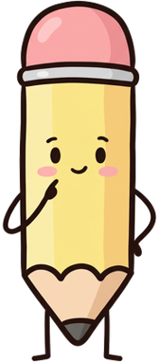

친구 글 맞춤법·어색한 문장 고쳐 주기♥ 좋아함 · ★ 잘함 상위 5%
두근두근 당곡
데이터가 흐르는 AI 시대의 학교 시스템


시연 데이터: 모의 학생 28명 · 실제 학생 개인정보 0건
| 학번 | 이름 | 프로그램 | 신청 | 참여 |
|---|---|---|---|---|
| 10501 | 김○○ | 진로 독서 | ✓ | ? |
| 10514 | 서윤 | 나도 작가 글쓰기 | ✓ | ? |
| 10520 | 이○○ | AI 탐구반 | ✓ | ? |
| 10527 | 박○○ | 나도 작가 글쓰기 | ✓ | ? |
[알림] 진로 프로그램 모집 마감은 금요일입니다.
[학년부] 학생부 진로활동 입력 마감 안내
[교무] 2학년 과목 선택 상담 주간 공지
2-1 택42-2 택43-1 택53-2 택5
“명단에 서윤이 이름은 있는데,
실제로 뭘 했지?”
실제로 뭘 했지?”
“이거 해 보고 싶다던 아이,
지금 신청할 프로그램 있나?”
지금 신청할 프로그램 있나?”
“그 학과 권장 과목이
우리 학교에선 어느 묶음이지?”
우리 학교에선 어느 묶음이지?”
원인은 흩어진 기록
네 사람을 도는 기록 한 줄
 학생친구 글 맞춤법 고쳐 주기담임 교사
학생친구 글 맞춤법 고쳐 주기담임 교사 프로그램 담당 교사
프로그램 담당 교사
생기부 담당 교사①생기부 업무
②프로그램 상담
③과목 선택 상담
①생기부 업무, 확인한 사실이 근거
출석 · 프로그램 담당 교사
나도 작가 글쓰기 · 4회 중 4회 출석
관찰 · 프로그램 담당 교사
원고 교정 단계에서 어색한 문장을 근거와 함께 고쳐 제안함
학생 후기
“친구 글 고쳐 주던 게 책 만드는 일로 이어졌어요”
진로 프로그램 ‘나도 작가 글쓰기’에 4회 모두 참여함. 원고 교정 단계에서 어색한 문장을 근거와 함께 고쳐 제안하는 모습을 보임. 활동 후 친구의 글을 고쳐 주던 경험이 책을 만드는 일로 이어진다는 점을 말하며 출판 편집에 대한 관심을 구체화함.
생기부 담당
종합 · 배포→담임
상담 더해 확정→나이스
교사가 직접 입력
종합 · 배포→담임
상담 더해 확정→나이스
교사가 직접 입력
결정은 교사 · 나이스 자동 연동 없음
②프로그램 상담, 권하면 그 자리에서 신청
담임 화면 · 1학년 5반 · 서윤
서윤의 꿈의 별자리
모집 중 · 선착순 12명나도 작가 글쓰기6월 · 4회 · 출판 글쓰기
두근두근 탐험대 · 서윤
초롱 쌤이 권했어요나도 작가 글쓰기
이번 학기 실천 활동나도 작가 글쓰기에서 출판 글쓰기 해 보기
신청 완료 (선발 진행)
두근두근 프로젝트넘어가는 정보는 학교 메일 · 프로그램명뿐참여가 확인되면→학생 ‘내 활동’+생기부 자료
③과목 선택 상담, 꿈에서 편제표까지 한 장
목표 직업편집자→관련 학과 · 커리어넷국어국문학과→권장 과목당곡고 2026 편제표 위에
국어국문학과 권장 과목투명 필름 한 겹
학생 화면은?
탕! 탕! 탕!
세 가지만01
좋아하고 잘하는 걸 쓰면 → 직업 추천
학생 글은 교내 컴퓨터에서만 처리
추천 직업으로 가는 길 → 꿈의 별자리
운영 중AI 모의 면접
AI 면접관편집자가 되고 싶다고 했는데, 원고를 고칠 때 가장 먼저 보는 것은 무엇인가요?
🎙 말로 답하기
그리고 면접 연습까지
3월 · 처음 쓴 한 줄친구 글 맞춤법·어색한 문장 고쳐 주기
→
11월 · 해 본 일로 새로 쓴 한 줄나도 작가 글쓰기에서 출판 글쓰기를 직접 해 봤어요★
운영 중두근두근 프로젝트 · 두근두근 스튜디오 · AI 구술평가 · AI 모의 면접
2027 시범두근두근 탐험대 · 모의 학생 28명으로 전 과정 확인
직업 923 · 성취기준 3,126 · 학교 과목 111 · 학교 행사 107